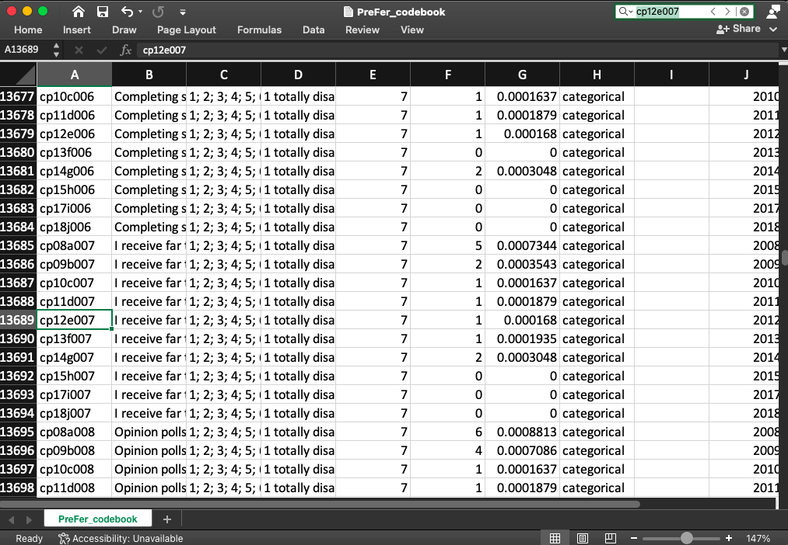

Here is some useful information that can help navigate the PreFer codebooks for the LISS datasets
Authors
Gert Stulp
Lisa Sivak
Published
March 21, 2024
Here we describe how to make use the codebooks PreFer_codebook.csv and PreFer_codebook_summary.csv. Broadly speaking, the first codebook is most useful to examine the meaning and characteristics of individual variables and their values and the second is most useful to see how the measurement of particular variables may have changed over time.
There are also detailed codebooks in Dutch and English on the LISS website. They contain important information, e.g. about filtering, which can be useful for working with missing values.
Here we describe how to use the PreFer codebooks.
PreFer_codebook.csv
This codebook contains metadata on all 31634 variables in the dataset PreFer_train_data.csv (and PreFer_train_supplementary_data.csv) and the 33 variables in the PreFer_background_data.csv.
The codebook contains the following variables:
“var_name”; name of variables.
“var_label”; the variable label; this is either a description of the variable or the survey question asked to respondents.
“values_cat”; the different values in the variable that had labels associated with these values (see variable labels_cat). For instance, “1; 2” in values_cat and “Male; Female” in labels_cat means that value 1 corresponds to males, and 2 to females.
“labels_cat”; the labels associated with the values in values_cat. For instance, “1; 2” in values_cat and “Male; Female” in labels_cat means that value 1 corresponds to males, and 2 to females.
“unique_values_n”; indicates how many unique values exist in the variable (excluding missing (NA) values, which certainly exist). This is NA for nomem_encr and nohouse_encr because these vary for each wave and survey.
“n_missing”; number of missing cases.
“prop_missing”; proportion of missing cases within survey (i.e., n_missing / n who did the specific survey)
“type_var”; assessment of the type of variable, with possibilities empty, “numeric”, “categorical”, “open-ended question”, “date or time”, and “character [almost exclusively empty strings]”. When a variable had value labels (see value_labels), and these value labels were of character type (e.g., 1 = “female”, 2 = “male”), then we considered the variable to be “categorical”. When a variable had no value labels, and the values in the variable were numeric, we considered the variable to be “numeric”. When a variable had value labels and none of the value labels were present in the data, and the values in the variable were numeric, we considered the variables to be “numeric”. For example, the variable cf08a005 had value labels “I don't know = 99999”, but 99999 was not present in the variable. Given that all values of the variable were numeric, we considered this variable to be numeric. We considered the value labels to be erroneous and updated the variables value_labels and value_labels_n to reflect this. We made a note in the variable note. The category “character [almost exclusively empty strings]” was reserved for variables that were strictly speaking of type character but that exclusively or nearly exclusively consisted of missing value and empty strings.
“note”; describes decisions we made in determining the type of the variable (see type_var) and the changes we made to the data.
“year”; indicates year of survey/wave.
“survey”; indicates in which core survey this variable is assessed.
“dataset”; variable can be found in this dataset.
Finding variables
An important aim of the codebook is to get insight on individual variables.
Example 1
Imagine you are interested in what the variable cp12e007 means. You can just open the codebook in an editor and look for it:

You can also do that via R or Python. In R:
library(readr) # for nicer output tables in htmlcodebook <- readr::read_csv("../../data/PreFer_codebook.csv") # you can also find this codebook at preferdatachallenge.nl/data/PreFer_codebook.csvcodebook[ codebook$var_name =="cp12e007", ]
# A tibble: 1 × 12
var_name var_label values_cat labels_cat unique_values_n n_missing
<chr> <chr> <chr> <chr> <dbl> <dbl>
1 cp12e007 I receive far too ma… 1; 2; 3; … 1 totally… 7 1
# ℹ 6 more variables: prop_missing <dbl>, type_var <chr>, note <chr>,
# year <dbl>, survey <chr>, dataset <chr>
This variable contained an answer to the question “I receive far too many requests to participate in surveys.”. It came from the 2012 Personality core survey. This is a categorical variable and has 7 possible values (from 1 to 7, see values_cat) which reflects a Likert scale because it has value labels (1 totally disagree; 2; 3; 4; 5; 6; 7 totally agree; see labels_cat). In the data, 7 unique values were actually observed (see unique_values_n), which does not need to be the case. In this 2012 wave of this Personality core survey, there was only 1 missing value (n_missing), which meant 0.0001679825 was missing (and that 1/0.0001679825 = 5953 participated in the survey). There is no note meaning no problems were observed for this particular variable.
Example 2
Let’s examine whether any variable labels (or question labels) say anything about income.
# A tibble: 1,192 × 12
var_name var_label values_cat labels_cat unique_values_n n_missing
<chr> <chr> <chr> <chr> <dbl> <dbl>
1 ci08a008 Did you receive inc… 1; 2 yes; no 2 50
2 ci09b008 Did you receive inc… 1; 2 yes; no 2 27
3 ci10c008 Did you receive inc… 1; 2 yes; no 2 62
4 ci11d008 Did you receive inc… 1; 2 yes; no 2 87
5 ci12e008 Did you receive inc… 1; 2 yes; no 2 40
6 ci13f008 Did you receive inc… 1; 2 yes; no 2 81
7 ci14g008 Did you receive inc… 1; 2 yes; no 2 41
8 ci15h008 Did you receive inc… 1; 2 yes; no 2 68
9 ci16i008 Did you receive inc… 1; 2 yes; no 2 32
10 ci17j008 Did you receive inc… 1; 2 yes; no 2 32
# ℹ 1,182 more rows
# ℹ 6 more variables: prop_missing <dbl>, type_var <chr>, note <chr>,
# year <dbl>, survey <chr>, dataset <chr>
Let’s focus on the variable netinc:
codebook[ codebook$var_name =="netinc", ]
# A tibble: 1 × 12
var_name var_label values_cat labels_cat unique_values_n n_missing
<chr> <chr> <chr> <chr> <dbl> <dbl>
1 netinc Personal net monthly… <NA> <NA> 3810 426190
# ℹ 6 more variables: prop_missing <dbl>, type_var <chr>, note <chr>,
# year <dbl>, survey <chr>, dataset <chr>
This variable measures personal net monthly income in euro. This is a numeric variable, and about 24% is missing. This is a background variable which means that it is recorded monthly for respondents. This variable can be found in PreFer_train_background_data.csv. At one point in time this variable had value labels associated with it: Unknown (missing) = -15, Prefer not to say = -14, I dont know = -13. However, these values were never observed in the actual data, which is why we removed these value labels from the variable var_label and why we turned this variable into numeric (from categorical). This process is described in note.
Variable types
Most variables types are either categorical (meaning that values have labels associated with them, e.g., 1 = “Male”, 2 = “Female”) or numeric.
table(codebook$type_var)
categorical
23571
character [almost exclusively empty strings]
15
date or time
566
numeric
6436
response to open-ended question
1079
Let’s imagine that in our analyses we only want to select variables that are categorical, numeric, or date or time. Note that we want to select these variable in the Core survey data (the train data) and do not want to include variables from the Background data (for further explanation on the datasets, click here).
We can now use this list of variables in our data. Let’s use the PreFer_fake_train.csv which is a fake dataset that has randomly generated information for 30 cases with identical variable names and structures of variables.
fake_data <- readr::read_csv("../../data/PreFer_fake_data.csv")# can also be found preferdatachallenge.nl/data/PreFer_fake_data.csvfake_data_sel <- fake_data[ , list_variables ]head(fake_data_sel) # brief overview
In an earlier example, we observed that variable cp12e007 was a categorical variable, but from the labels_cat it was clear that this was some sort of Likert scale, from “1 totally disagree; 2; 3; 4; 5; 6; 7 totally agree” (separated by semi-colons). Let’s read-in and parse the values from values_cat and the corresponding labels from labels_cat
values_cp12e007 <- codebook[ codebook$var_name =="cp12e007", ]$values_cat # is a stringvalues_cp12e007 <-strsplit(values_cp12e007, "; ")[[1]] # to vectorlabels_cp12e007 <- codebook[ codebook$var_name =="cp12e007", ]$labels_cat # is a stringlabels_cp12e007 <-strsplit(labels_cp12e007, "; ")[[1]] # to vector# add information to variable in datafake_data_sel$cp12e007 <-factor(fake_data_sel$cp12e007, levels = values_cp12e007, labels = labels_cp12e007,ordered =TRUE)attributes(fake_data_sel$cp12e007)
The summary codebook is useful to examine whether particular questions have been repeatedly asked to respondents, and whether the questions asked or answer options provided were consistent or modified throughout time. The summary codebook contains the following variables:
survey; indicates in which core survey this variable is assessed
“last3letters”; the last 3 letters of the variable name that are consistent throughout waves. Exceptions here are the first three entries, “nomem_encr”, ” new_child”, and “*****_m”. “nomem_encr” is the unique personal identifier and is used to link all datasets and will never change for an individual; the variable ending with “_m” refers to the year and month of the survey (e.g., 200806 -> June 2008)
“var_names”; the names of the variables within a particular core surve with the extension in last3letters across all the waves it was in
“n_waves”; the number of waves the variable with the extension in last3letters used in
“which_waves”; in which waves (years) was the variable with the extension in last3letters used
“n_different_var_label”; the number of different labels of the variables with the extension in last3letters across all the waves it was in. A value higher than one implies that the text / question of this variable has changed across waves.
“var_label_across_waves”; the different labels that were used for the variables with the extension in last3letters across all the waves it was in.
“n_different_value_labels”; the number of different value labels for the variables with the extension in last3letters across all the waves it was in. A value higher than one implies that the possible answer categories have changes across waves.
“value_labels_across_waves”; which different values did the variables have with the extension in last3letters across all the waves it was in.
“n_different_value_labels”; the number of different variable types (e.g., categorical, numeric) of the variables with the extension in last3letters across all the waves it was in. A value higher than one implies that the variable type has changed across waves.
“var_type_across_waves”; which different variable types did the variables have with the extension in last3letters across all the waves it was in.
Example interpretation
Here we examine the variable with the extension 007 both in the “Family & Household” and “Personality” core surveys.
codebook_summ <- readr::read_csv("../../data/PreFer_codebook_summary.csv")# can also be found at preferdatachallenge.nl/data/PreFer_codebook_summary.csvsubset(codebook_summ, last3letters =="007"& survey %in%c("Family & Household", "Personality") )
The variable with the extension (last 3 letters/digits) 007 in the Family & Household survey (“cf”) featured in 13 waves, from 2008 to 2020. It had the following names across those 13 waves: cf08a007, cf09b007, cf10c007, cf11d007, cf12e007, cf13f007, cf14g007, cf15h007, cf16i007, cf17j007, cf18k007, cf19l007, cf20m007. The label of this variable was changed once because there are two labels for these variables: 1) Is your father still alive? and 2) Is your biological father still alive? The answer categories were: yes = 1, no = 2, I don’t know = 99 across all waves.
The variable with the same extension (last 3 letters/digits) 007 in the Personality survey (“cp”) featured in 10 waves, from 2008 to 2018. It had the following names across those 10 waves: cp08a007, cp09b007, cp10c007, cp11d007, cp12e007, cp13f007, cp14g007, cp15h007, cp17i007, cp18j007. The label of this variable across waves was “I receive far too many requests to participate in surveys”. Across all waves, there has been a change in labelling: 1 totally disagree = 1, 2 = 2, 3 = 3, 4 = 4, 5 = 5, 6 = 6, 7 totally agree = 7 – AND – 1 totally disagree = 1, 2 = 2, 3 = 3, 4 = 4, 5 = 5, 6 = 6, 7 totally agree = 7. Note the extra space before the ” 7 totally agree” in the first instance.